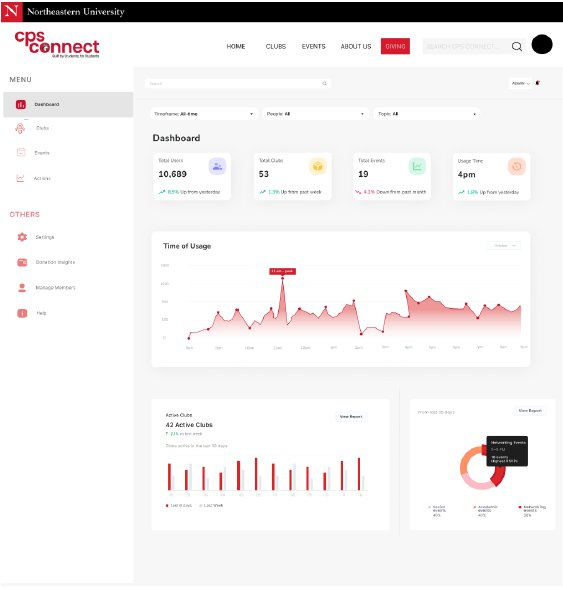
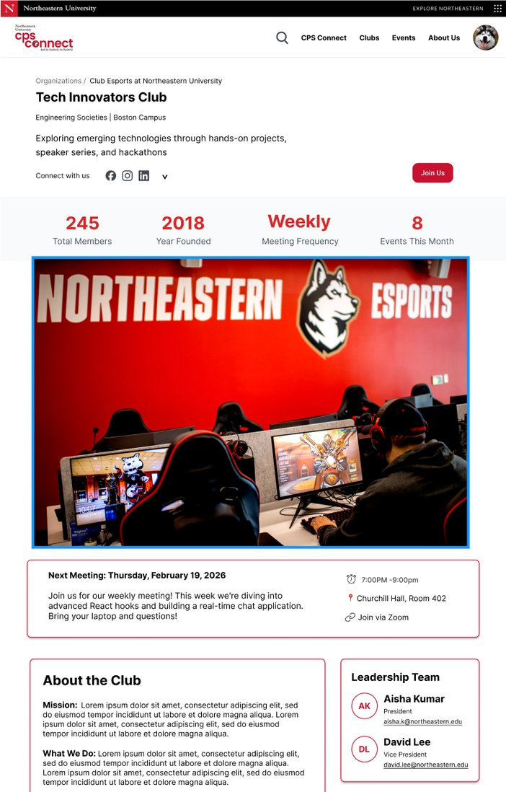

A website redesign and user testing capstone built for Northeastern University's College of Professional Studies (CPS). The goal: help CPS students feel connected to the rest of the university by providing a single hub for news, events, and happenings across all campuses.
01 · About the Platform
A student-built engagement hub for Northeastern University's College of Professional Studies, connecting grad and undergrad students across all US campuses to clubs, events, and each other.
CPS operates on a quarter-based system and serves a student body largely made up of working professionals. Unlike traditional undergrad programs, most CPS students balance full-time jobs alongside their coursework, which means typical campus activities and events rarely fit their schedules.
CPS Connect was created as an independent student initiative to bridge that gap - giving graduate students who arrive with no existing campus network a way to find community, discover relevant events, and stay connected to university life on their own terms.
The platform features clubs, events, a student bulletin board, a social post feed, and weekly challenges, tailored to the CPS community across Boston, Seattle, Silicon Valley, and Online campuses.
02 · What the First Round Revealed
25 CPS grad students tested the original platform via moderated Zoom sessions. Here is what surfaced.
4 in 10 users couldn't understand what the platform offered on first load. The hero section failed to communicate value.
Users couldn't tell whether clubs were active. No timestamps or member counts created decision paralysis.
65% expected a centralized calendar. Without one, users hunted event info across Instagram, Discord, and email.
Most participants expected seamless phone access. The desktop-first layout created friction on smaller screens.
The original CPS Connect platform we audited. The issues with navigation, clarity, and engagement are visible firsthand.
View Original Site03 · Design Strategy
Seven design audits. One new design system. Each decision mapped directly back to a problem statement from Round 1.
Rebuilt navigation labels from scratch, removing inherited WordPress terms and replacing with student-centric language.
Designed a clear hero section with explicit value proposition and stat display, communicating purpose on first load.
Added activity badges, member counts, category tags, and meeting frequency to every club card.
Structured events with date, time, location, type, and registration status. Introduced filter chips by category.
The redesign bridges to NU Engage, guiding students through SSO login step by step.
Rebuilt the layout grid to prioritize mobile-first rendering with responsive breakpoints throughout.
New addition: centralized approval queue, usage analytics, member management, and event category breakdown.
Northeastern red, clean sans-serif hierarchy, card-based layouts with trust signals at the component level.
Key screens from our redesigned platform, including the admin dashboard and the individual club detail view.


04 · The Pivot
While searching for references for our redesign, we stumbled on something unexpected: NU Engage, a social platform Northeastern already had in place with existing clubs and events pages.
NU Engage is Northeastern's existing social platform where students across all colleges can discover clubs, register for events, and connect with organizations. It already had the infrastructure we were building from scratch. Instead of treating this as a setback, we saw an opportunity: by incorporating NU Engage's pages into our redesign, we weren't just fixing CPS Connect - we were actually connecting CPS to the rest of NEU for the first time.
We had designed a moderated usability study to test whether our redesigned prototype reduced friction. No guaranteed adoption path existed.
We incorporated the existing NU Engage website into our redesign, built a new prototype in one week, and conducted testing on the updated platform - producing immediately actionable findings CPS could use today.
No work was wasted. The prototype, the audit, and the design system all informed the updated usability study. We updated the screener to recruit students with no prior NU Engage exposure, revised all task scenarios, and upgraded the post-task survey to SUS plus 3 custom questions.
05 · Results
The new static site scores higher on every dimension, with the most dramatic improvement in purpose clarity.
"Was the purpose of the platform clear on first glance?"
"How easy was it to navigate the platform?"
"How confident do you feel joining a club through this platform?"
"How often would you realistically use this platform?"
06 · Behavioral Patterns
Users instinctively reached for the search bar rather than browsing. Content must be discoverable by keyword, not just by category navigation.
Users checked "Last Updated" timestamps and scanned for upcoming events before making any join decision. A club with no recent activity was treated as inactive and skipped.
Pages with outdated information or no recent posts caused users to pause and reconsider joining, even if the club was listed as active.
Most participants opened the platform on their phones first. Desktop-first layouts created noticeable friction.
07 · Next Steps
Directly mapped from research findings. Each recommendation is immediately actionable without a full platform rebuild.
Add an "Active" indicator for clubs that have posted or updated in the last 30 days. Builds trust before joining and reduces decision paralysis.
Build a centralized "My Schedule" view with all registered events in one place. 65% of users demanded this.
A brief guided tour on first visit closes the purpose-clarity gap from Site A testing, targeted at the 40% who needed exploration to understand the platform.
Official communications centralized on CPS Connect. Let Discord handle informal community chat. Separate the channels clearly.
08 · Credits
Professor Alexandra Candelas
Aishwarya Sivakumar
Drishti Ghanshani
Betty Chang
Yihong Jiang
Mingyue Xin
Northeastern University · College of Professional Studies · MS Digital Media · Winter 2026